Getting Started with Altera Quartus II
NOTE: Step 1 and Step 2 are to be followed only if you are installing Altera Quartus II for the first time. If you are using EECS commons or lab computers, you can start with Step 3 as the software is pre-installed.
Step 1: Install the Altera Quartus 7.1 CD that comes with your book
1.) The Quartus II CAD software can be installed by running the following command in the command prompt: Start->Programs->Accesories->Command
:\CDROM\Quartus_II\72sp2_quartus_free.exe (For my computer the CD-ROM drive was H:) 2.) The installation process involves a series of steps.Choosing a complete install will require approximately 1.5 GB of free space.Make sure you have enough space on your target directory. Step 2: Obtaining the license file
1.) After the installation you need a license file which has to be downloaded. 2.) Open your browser and go to www.altera.com/licensing 3.) Click on the Get licenses link which is the first blue link on the page 4.) Click on Get a license for Quartus® II Web Edition software and the ModelSim®-Altera Web Edition software that is also the first link on the page 5.) You should create an account using your e-mail address. Alternatively, you can use the Get one time access option. You will be asked to enter information about you in this process. 6.) Once you have an username and password you can go back to Step 2.5 and now enter the username and password. 7.) As part of the procedure you will be asked to provide your network interface card number. The Network Interface Card (NIC) number is a 12-digit hexadecimal number that identifies your computer. You can find the NIC number for your network card by typing ipconfig /all at a command prompt. Your NIC number is the number on the physical address line, minus the dashes, for example,00C04FA392EF So, to obtain this number, type the following command in a Windows Command Prompt window: ipconfig /all Look for the line of the form Physical Address.............: 00-C0-4F-A3-92-EF The last part of this line is the network interface card number. In this example, you would type 00C04FA392EF (without the - dashes) into the box that says "Enter your network interface card (NIC) number:" on the licensing web page. Once you have provided to Altera the required information to obtain your license file, the file will be emailed to you along with instructions on using the license file. The email is normally returned to you from Altera in less than one hour. (Reference: README file of the Altera Quartus 7.1 CD) 8.) The instructions to download and specify the license file to Altera will be given to you in your email which has the license file
Step:3 Creating a New Project
Let us design, compile and simulate a simple three input AND gate: 1.) After obtaining the license you can start working on Quartus by creating a project. Go to File- >Create New Project wizard 2.) In the window that pops up you have to enter the directory where you want to store your project files, the file name and a project name and click Next. (Note: The file name should be the same as your top-level entity). This is shown in Fig. 1 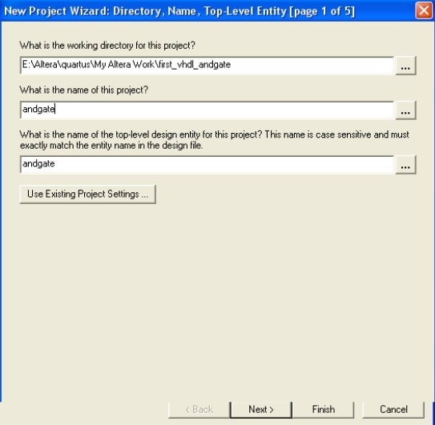 Fig. 1. New Project Wizard 3.) In this step you will be asked to enter the family and device settings. You need not worry about this step if you are not downloading your design to a board. Click Next. 4.) Next is the EDA Tools Settings. You need not worry about this step if your project does not depend upon files from other projects. Click Finish. The final screen should be something like Fig.2. It might look somewhat different for you but you can ignore the device assignment settings. Just make sure that your project directory and file name are the same as you had entered. Click Finish once you are done. 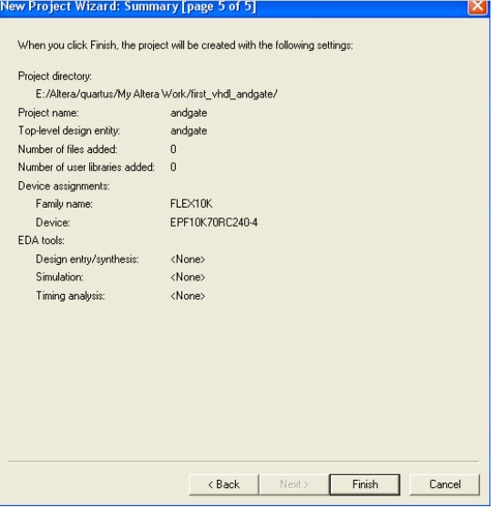 Fig 2. Summary of the New Project Wizard 5.) After creating a new project you can create the VHDL design file from File->New-> VHDL file. This is shown in Fig. 3 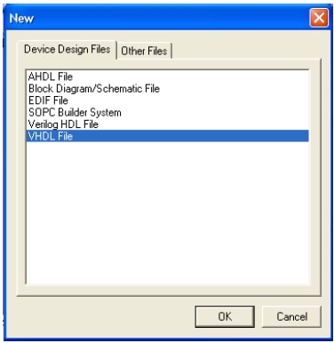 Fig.3 New VHDL file 6.) Save the file into the directory which you specified while creating your project from File->Saves As with a .vhd extension Note: By default it will save to your project directory with .vhd extension; you just have to make sure it does. The screen should like the one shown in Fig.4. 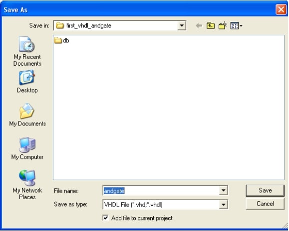 Fig.4 Save the VHDL file 7.) Now you can start entering your VHDL design. Refer the VHDL tutorial for the design entry. Once you complete your design you can save it from (File->Save) or Ctrl+s is the shortcut. The AND gate design entry is shown in Fig.5. Note that the entity name is the same as the file name. 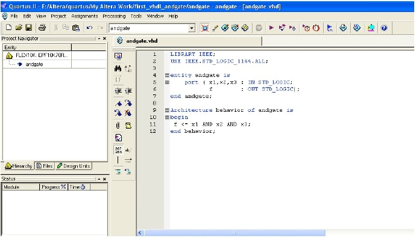 Fig. 5. AND gate design entry 8.) There are pre-defined templates which can be obtained from Insert->Templates->VHDL for templates. These templates can help you with the design process.
Step 4 Compiling your design
1.) Once you have completed your design you should compile it to check for errors. 2.) You can compile it using Processing->Start->Start Analysis and Synthesis or Ctrl+k is the shortcut for that. This is shown in Fig 6. 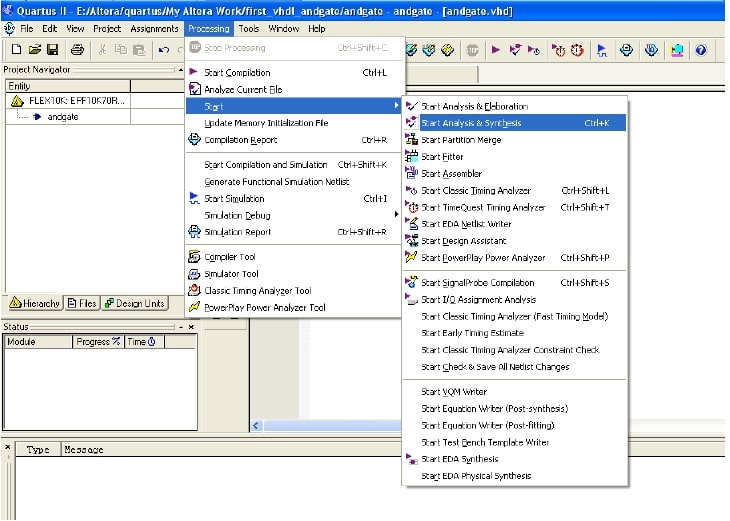 Fig.6. Compiling your design 3.) This gives a compilation report. If you get an error you can get more information about the error by selecting the error and pressing F1.This can help you with your debugging process. This is shown in Fig.7 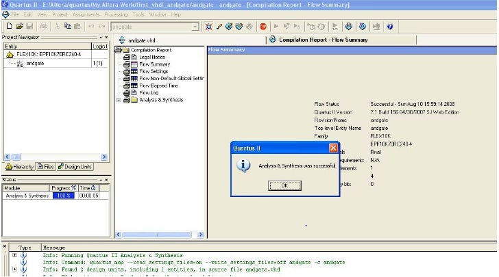 Fig.7 Compilation Report
Step 5: Simulation
1.) Once you successfully compile your design you can simulate the waveforms. 2.) Click on File->New->Other Files->Vector Waveform Files to get a waveform editor window as shown in Fig.8. 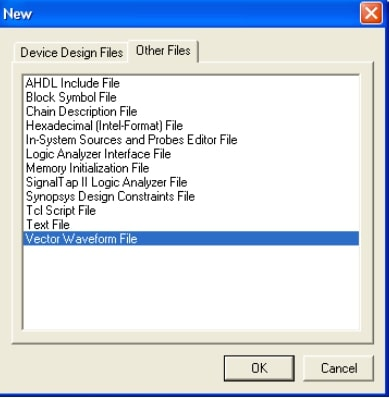 Fig.8 Waveform Editor You should save it in the same directory with a .vwf extension. Note: By default it will save to your project directory with .vhd extension; you just have to make sure it does. 3.) You can specify the end time for the simulated waveform by specifying Edit->End time. This is shown in Fig. 9. 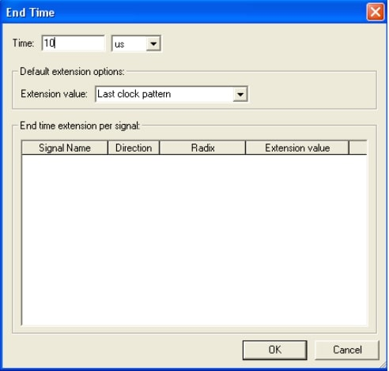 Fig 9. Specify End Time 4.) Select View->Fit in Window, to show entire output for the simulated waveform. 5.) Enter the Input and Output Nodes of the circuit from Edit->Insert Node or Bus . Click on Node Finder from the menu. You should get a window as shown in Fig. 10. 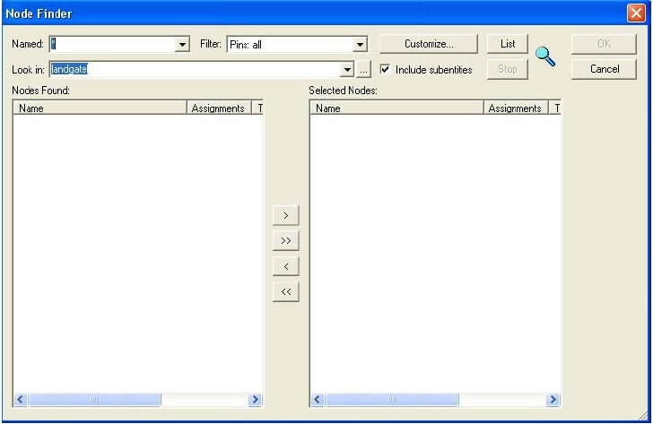 Fig 10. Node Finder Window 6.) In the resulting window select all for Pins from the drop down menu and click on list. 7.) Now all the pins of your design will be listed on the left pane. Select each pin and click on > to move the pin to the right pane. You should repeat this for each pin. Click OK. 8.) Now you should be able to get all the pins in your waveform editor window. The screen should look like the one in Fig. 11. 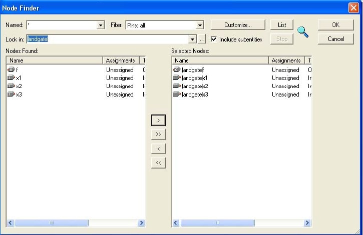 Fig 11. Node Finder 9.) The time period for each waveform (x1, x2 and x3) can be entered by clicking on the Overwrite Clock icon from the vertical tool bar in the waveform editor window. This is shown in Fig. 12 and Fig. 13. Let us use a time period of 1, 0.5 and 0.25 microseconds for x1, x2, x3 respectively for this example. Save the input in your project directory with a .vwf extension. After entering the screen should like the one shown in Fig 14. Note the output pin f has does not have a waveform. We will see the output waveform after we simulate. 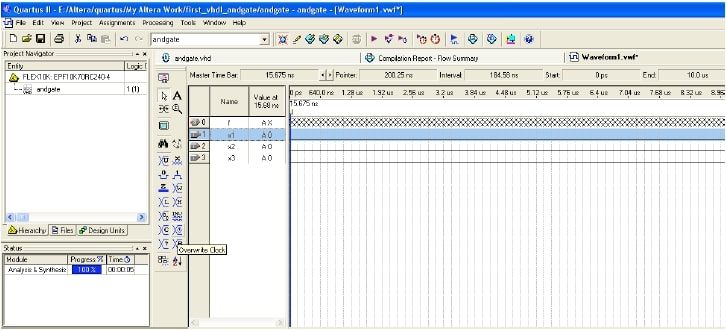 Fig 12. Overwrite Clock to enter time period. 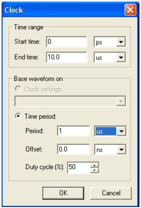 Fig 13. Enter Time Period 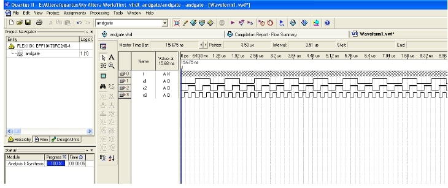 Fig 14. Waveforms 10.) There are two types of Simulator modes: Functional and timing. The difference between them is that functional mode does not show prorogation delays. This can be selected from Assignment- >Settings->Simulator and choosing Simulator mode. Let us do a functional simulation to start with. The screen should look like Fig 15. Enter the simulation input file by browsing to your project folder. The screen should look like Fig 16. 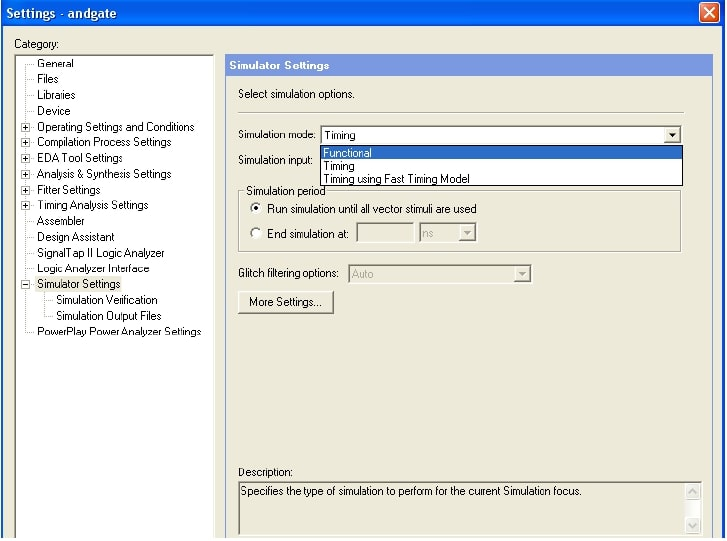 Fig.15 Functional Simulation Settings 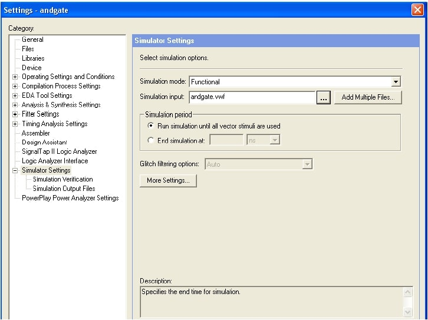 Fig. 16 Functional Simulation Settings 11.) Save the changes made till now. If you choose functional mode go to Processing->Generate Functional Simulation Netlist. Click OK on the dialog box that appears. 12.) The simulation can be started from Processing->Start Simulation or shortcut (Ctrl+i). The final output should be like the one shown on Fig.17 The shortcut to compile and simulate is Ctrl+Shift+k. 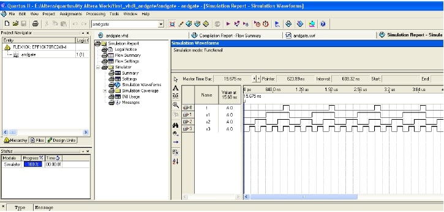 Fig 17. Simulated Waveform This ends the tutorial. You can try implementing other designs.